VGPU配置

测试纯文字： 测试
测试标题###：
测试标题##：
测试标题#：
测试代码块：
yum install
测试本地图片：

测试本地图片： img
测试引用： > 测试
测试加粗**： 测试
测试无序列表-： - 测试1 - 测试2
测试有序列表1.： 1. 测试1 2. 测试2
测试斜体*： 测试
测试斜体_： _测试
设置显卡禁止直通 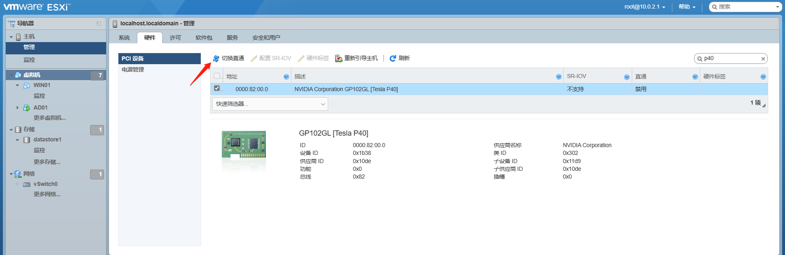
上传驱动vib文件

进入维护模式 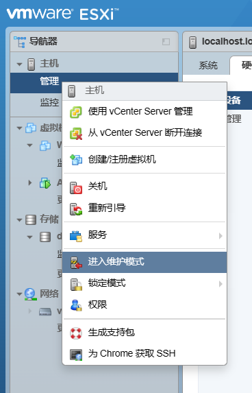
设置读写权限 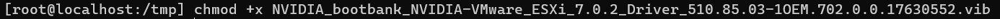
安装驱动
esxcli software vib install -v (vib文件路径) ---安装驱动
esxcli software vib update -v (vib文件路径) ---更新驱动

验证驱动
nvidia-smi
nvidia-smi -e 0 ---若ECC不为OFF
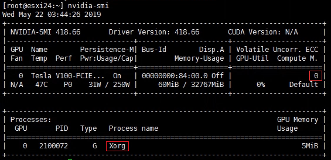 若红框为Xorg 设置显卡共享类型 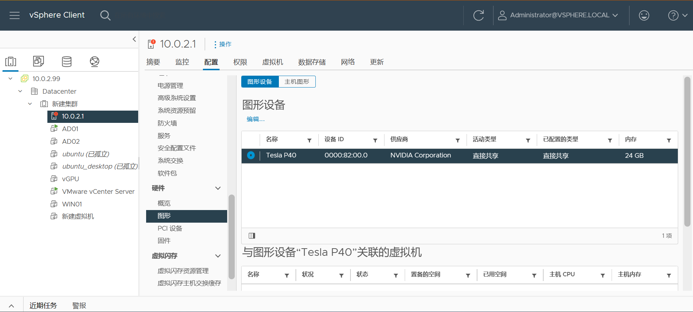
切换直接共享 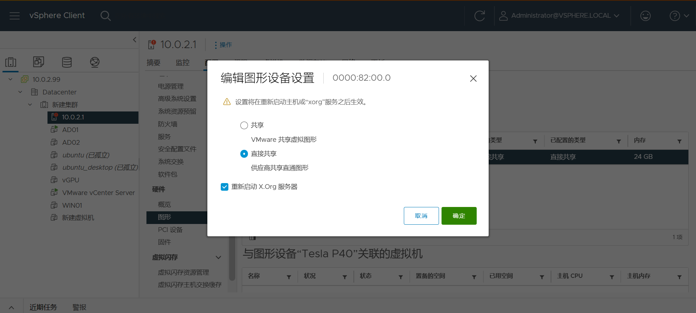
再次验证驱动，如图即可
nvidia-smi
lspci | grep NVIDIA
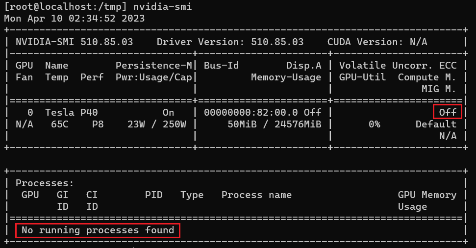 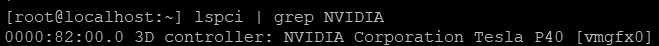
lic版本对照表 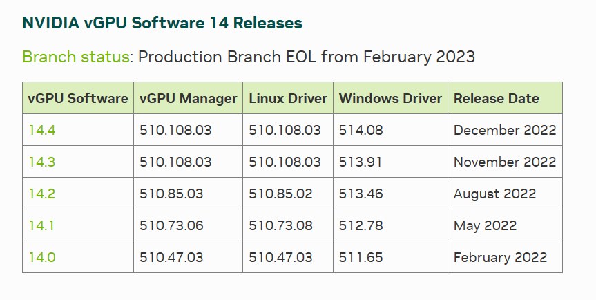
配置CentOS虚拟机
8a:50:13:0c:ae:06 ---修改虚拟网卡MAC
2018-07-19 18:40:00 ---修改系统时间并关闭ntp同步
yum update -y ---更新系统
yum intsall java -y ---安装java
yum install tomcat tomcat-webapps -y ---安装tomcat
本机上传安装文件到虚拟机
scp setup.bin root@IP:文件夹
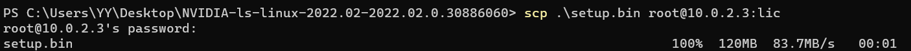
验证上传 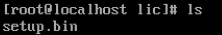
安装licserve
./setup.bin ---运行安装文件
/usr/share/tomcat ---提示输入tomcat路径时输入默认路径
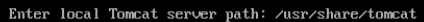
服务设置
systemctl stop firewalld ---停止防护墙
systemctl disable firewalld ---禁用防火墙自启服务
systemctl start tomcat.service ---启动tomcat服务
systemctl enable tomcat.service ---设置tomcat服务自启
systemctl status tomcat.service ---查看服务状态
systemctl list-unit-files ---查看所有自启服务 we前后 q退出
验证授权服务器
http://ip:8080/licserver ---浏览器进入管理页面
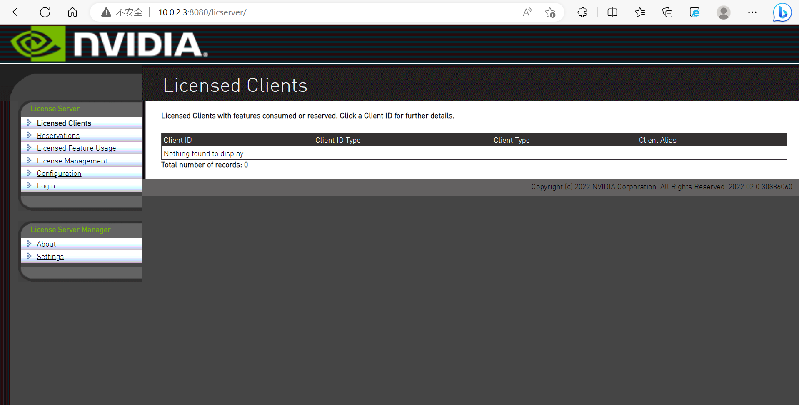
导入vib授权文件 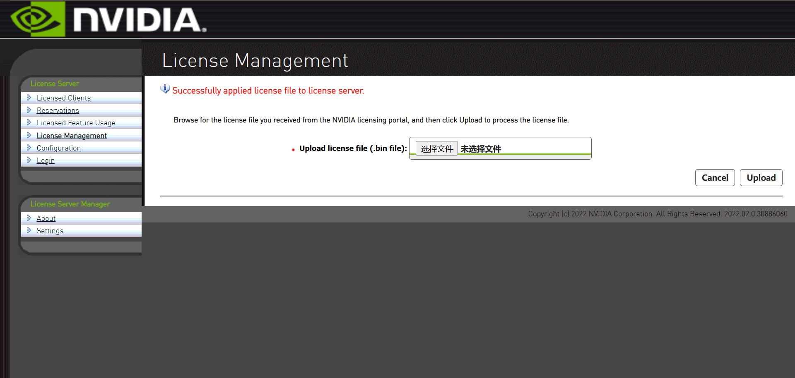
验证授权 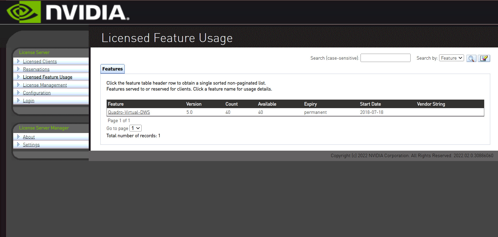
授权服务器打开NTP自动同步
yum -y install chrony ---安装软件
systemctl enable chronyd ---开机自启
systemctl start chronyd ---启动
timedatectl status ---查看时间同步状态
timedatectl set-ntp true ---开启网络时间同步
date ---查看系统时间是否正确
下载对应的guid驱动，并安装 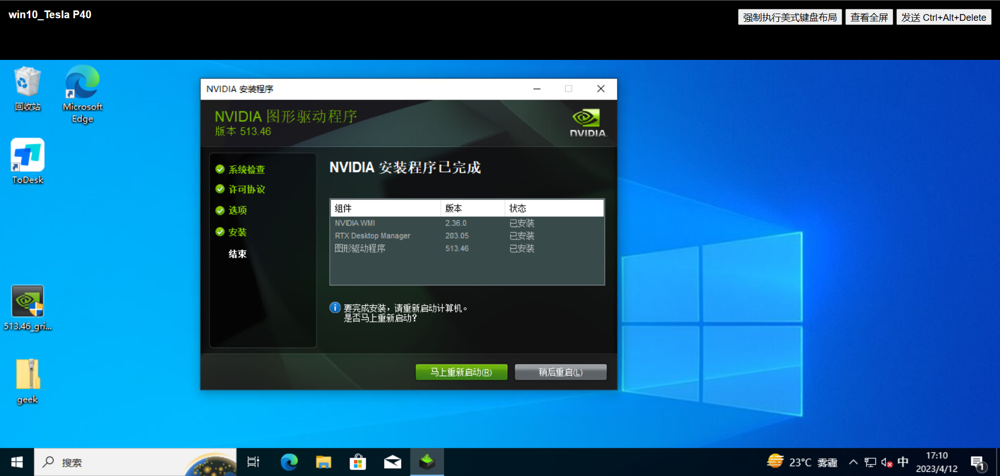
进入驱动面板，输入授权服务器ip及7070授权端口 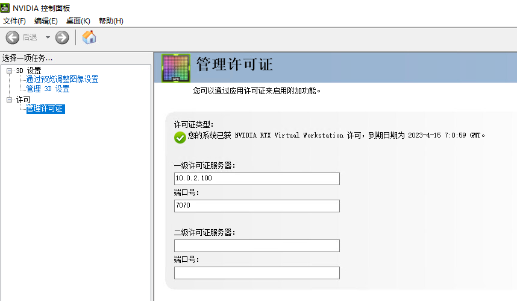
管理面板验证授权成功 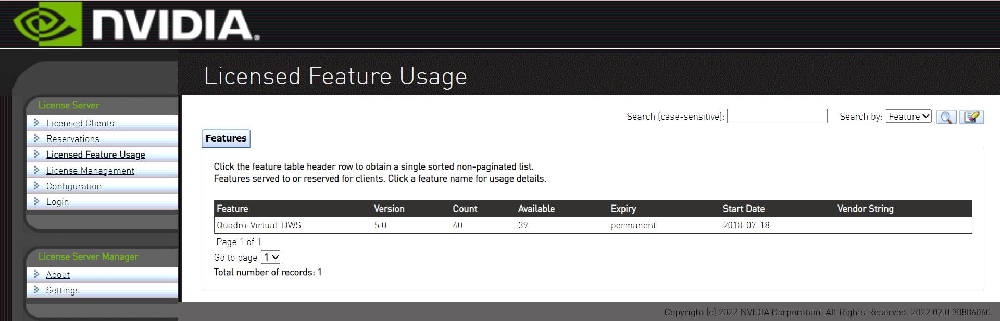 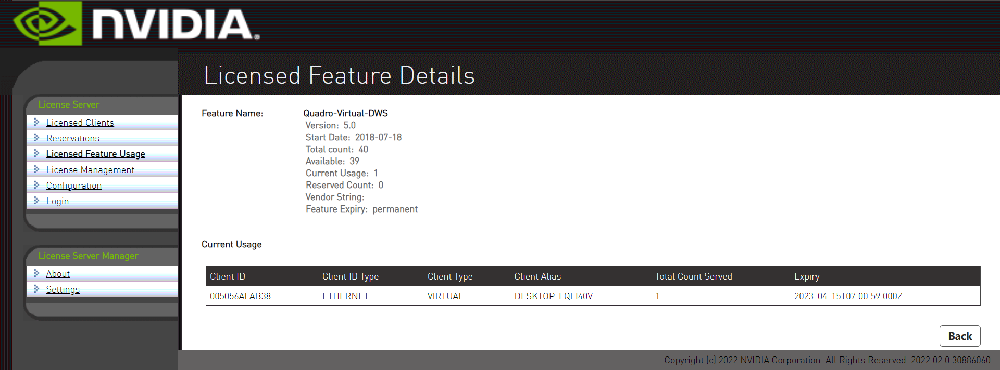